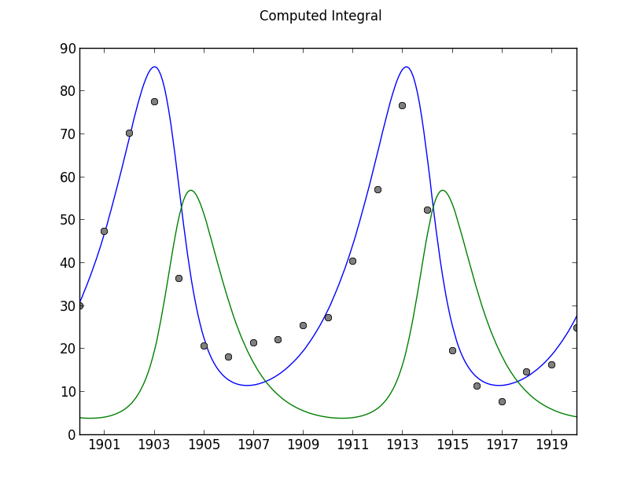

User Guide¶
EasyModler is a package for calibration and simulation of Ordinary Differential Equations ODEs.
Features
- ODEINT Wrapper Intelligent non-invasive wrapper to scipy.odeint
- ODE Calibration Auto-calibrate a series of ODEs to data
- TimeSeries Files Handling of dtInput
- Model Validation Validate using Goodness of Fit statistics
- Graphical Plotting Basic plotting via matplotlib
- Graphical Interface Coming in version 2.3
1. Simple Model Integration¶
The Lotka Volterra system is a simple model of predator-prey dynamics and consists of two coupled differentials.
| [LVWikipedia] | http://en.wikipedia.org/wiki/Lotka%E2%80%93Volterra_equation |
| [Volterra1928] | Volterra, V. (1928). Variations and fluctuations of the number of individuals in animal species living together. J. Cons. Int. Explor. Mer, 3(1), 3-51. |
| [Lotka1922] | Lotka, A. J. (1922). Contribution to the energetics of evolution. Proceedings of the National Academy of Sciences of the United States of America, 8(6), 147. |
This is a simple example highlighting EasyModler’s ability to integrate ODEs without complication! At a minimum to integrate we require:
- An defined ODE function
- A set of initial conditions as a list
- Number of times to run the integrator
Import EasyModeler 2:
>>> import emlib
Declare an ODE_INT function in your source code. This will be passed to scipy.integrate.odeint().
The variables dtinput and constants are required, but will not be utilized in this example.
def LV_int(t,initial,dtinput,constants):
x = initial[0]
y = initial[1]
A = 1
B = 1
C = 1
D = 1
x_dot = (A * x) - (B * x *y)
y_dot = (D * x * y) - (C * y)
return [x_dot, y_dot]
Pass the ODE function to emlib.Model as
>>> LV = emlib.Model(LV_int)
INFO -512- New Model(1): LV_int
INFO -785- No algorithm supplied assuming vode/bfd O12 Nsteps3000 dt1
DEBUG -799- Integrator:vode/bdf order:12 nsteps:3000 dt:1
Now lets integrate our LV function for 20 timesteps!
>>> LV.Integrate([1,1],maxdt=20) DEBUG -806- ODEINT Initials:32 DEBUG -846- Ending in 20 runs DEBUG -868- Integration dT:0 of 20 Remaining:20 DEBUG -880- Completed Integration, created np.array shape:(20, 2)
The model output is stored in the
emlib.Modelobject as arrays computedT and computed>>> print LV.computed [[ 0.37758677 2.93256414] [ 0.13075395 1.32273451] [ 0.14707288 0.55433421] [ 0.27406944 0.24884565] ...
Since we would much prefer a graph instead of a table of output lets use the built-in plotting function thanks to
matplotlib()>>> LV.Draw()
The default behaviour of emlib.Model is to assume a dt of 1 if not specified. The dt or DeltaTime of the simulation is the change of time computed.
For the LV model we may wish to integrate additional steps to increase the accuracy of the simulation. Lets integrate again with a dt of .01 (100 steps)
>>> LV.Integrate([3,2],maxdt=20, dt=.01)
DEBUG -806- ODEINT Initials:32
DEBUG -846- Ending in 2000 runs
DEBUG -868- Integration dT:0 of 2000 Remaining:2000
DEBUG -868- Integration dT:500 of 2000 Remaining:1500
DEBUG -868- Integration dT:1000 of 2000 Remaining:1000
DEBUG -868- Integration dT:1500 of 2000 Remaining:500
DEBUG -880- Completed Integration, created np.array shape:(2000, 2)
>>> LV.Draw()
2. Managing Model Coefficients¶
The Lorenz system is a series of three differentials that were described by Edward Lorenz. http://en.wikipedia.org/wiki/Lorenz_system This system is a great example of the power of coefficients!
In this example we will delve into the EasyModeler emlib package to manage passing constants, or coefficients to our ODE function.
Declare the Lorenz ODE function and create an
emlib.Modelobject. However, we will now pass another list structure to our define which will become our coefficients:def Lorenz_int(t,initial,dtinput,constants): x = initial[0] y = initial[1] z = initial[2] sigma = constants.Val("Sigma") rho = constants.Val("Rho") beta = constants.Val("Beta") x_dot = sigma * (y - x) y_dot = x * (rho -z) - y z_dot = x * y - beta* z return [x_dot, y_dot, z_dot]
Initialize the model:
>>> LZ = emlib.Model(Lorenz_int) INFO -821- New Model(2): LV_int INFO -833- No algorithm supplied assuming vode/bfd O12 Nsteps3000 dt1 DEBUG -847- Integrator:vode/bdf order:12 nsteps:3000 dt:1
We now will create a
emlib.Calibrationstructure. This will define our coefficients for Sigma, Rho, and Beta. For this example we want to keep Sigma and Beta constant, but allow Rho to change:>>> LZcalibration = emlib.Calibration() INFO -244- New Calibration instance: 1 >>> LZcalibration.Add("Sigma",val=10,isconst=True) DEBUG -470- C:1 Sigma 10 >>> LZcalibration.Add("Rho",val=99.96,min=10,max=100) DEBUG -470- C:2 Rho 99.96 >>> LZcalibration.Add("Beta",val=2,isconst=True) DEBUG -470- C:3 Beta 2 >>> LZcalibration.initial = [1,1,1]
Integrate the function for 30 timesteps with a dT of .1, then draw a graph:
>>> LZ.Integrate(LZcalibration.initial,Calibration=LZcalibration,maxdt=30,dt=.01) >>> LZ.Draw()
Since there are three dimensions to the LZ function we can also print a 3D graph using a supplied option to
emlib.Model.Draw():>>> LZ.Draw(graph="3d")
Note
The graphing wrapper will only pass the first three computed differentials (x,y, and z) unless a specified order is passed. For more information check the documentation for emlib.Model.Draw()
3. Model Input¶
In practice most models have boundary conditions and input to feed the equation set. Typically, this data is in the form of a table
where each moment of time has a value used by the model per dT. The EasyModeler structure of interest is emlib.TimeSeries.
For this example we will add a food source term for the prey population of the Lotka Volterra model:
def LV_int(t,initial,dtinput,constants): x = initial[0] y = initial[1] food = dtinput.Val("food") A = 1 B = 1 C = 1 D = 1 x_dot = (A * food * x) - (B * x *y) y_dot = (D * x * y) - (C * y) return [x_dot, y_dot]
The timeseries that will be passed to the model is LVinput.csv. This file is included in the emlib download package. The file contains a column of dates in mm/dd/yyyy format, and a column of random numbers from 0 - 1 with the heading food.
A snipet of this file looks like:
DATE food 01/01/1900 0.330949 02/01/1901 0.8346444 03/01/1902 0.1472098
See also
For more help in defining and importing timeseries data see emlib.TimeSeries(). EasyModeler 2 supports files in CSV (Comma Separated Values) and SAS binary.
By importing a emlib.TimeSeries() file EasyModeler will use the time component as our dTinput. Each row of values will be passed to the integral per dT.
Therfore, dT[0] = 01/01/1900, dT[1] = 02/01/1900,...
>>> LVmodel = emlib.Model(LV2_int)INFO -1026- New Model(1): LV2_int
INFO -1038- No algorithm supplied assuming vode/bfd O12 Nsteps3000 dt1
DEBUG -1052- Integrator:vode/bdf order:12 nsteps:3000 dt:1
>>> LVtime = emlib.TimeSeries(filename="LVinput.csv")
INFO -827- New TimeSeries instance: 1
DEBUG -873- New INPUT table LVinput.csv['Date', 'food']
DEBUG -884- Saved 241 rows and 1 columns
DEBUG -886- Converted dates to contiguous np.array
DEBUG -888- Converted input data to contiguous np.array
>>> LVmodel.Integrate([3,2],TimeSeries=LVtime,dt=(1.0/12.0))
DEBUG -1059- ODEINT Initials:32
DEBUG -1098- Starting:1900-01-01 Ending:241
DEBUG -1099- Passing DtInput:['food']
DEBUG -1127- Integration dT:0 of 241 Remaining:241
DEBUG -1139- Completed Integration, created np.array shape:(241, 2)
>>> LVmodel.Draw()
4. Validating a Model to Observation Data¶
In this exercise we will use EasyModeler to compute validation statistics on a model to observational data. The Lotka Volterra system was originally designed to describe the population data of Hares and Lynx. This dataset is available from the emlib download package as LVdata.csv.
An important distinction of observation vs timeseries dtinput is observational files can contain replicate observations of a value at the same time.
DATE Hares Lynx 01/01/1900 30 4 01/01/1901 47.2 6.1 01/01/1902 70.2 9.8
See also
For more help in defining and importing timeseries data see emlib.Observation(). EasyModeler 2 supports files in CSV (Comma Separated Values) and SAS binary.
Import the dataset:
>>> LVhares = emlib.Observation("Hares",filename="LVdata.csv") DEBUG -671- ['Year', 'Hares', 'Lynx'] DEBUG -673- New OBS for value:Hares COLMS:1 LVdata.csv INFO -690- Read file LVdata.csv 21 Observations for value Hares
Now create a calibration class for the model. The historical calibration for LV is a=.5,b=.02,c=.9,d=.03.
>>> LVBEST = emlib.Calibration() INFO -295- New Calibration instance: 1 >>> LVBEST.Add("A",val=.5) DEBUG -530- C:1 A 0.5 >>> LVBEST.Add("B",val=.02) DEBUG -530- C:2 B 0.02 >>> LVBEST.Add("C",val=.9) DEBUG -530- C:3 C 0.9 >>> LVBEST.Add("D",val=.03) DEBUG -530- C:4 D 0.03 >>> LVBEST.initial = [30.0,4.0]
Lets define now the LV Model again, but with the advanced coefficient class:
def LV3_int(t,initial,dtinput,constants): x = initial[0] y = initial[1] A = constants.Val("A") B = constants.Val("B") C = constants.Val("C") D = constants.Val("D") x_dot = (A * x) - (B * x *y) y_dot = (D * x * y) - (C * y) return [x_dot, y_dot]
We also required a dtinput class, even though it is not used in the equations. This is required because our model’s dT is based in time. a dtInput file will be used to feed information about time (our X axis in a timeseries graph) for validation and graphing purposes. The file LVinput.csv is included in the emlib package:
>>> LVtime = emlib.TimeSeries(filename="LVinput.csv")
INFO -811- New TimeSeries instance: 1
DEBUG -857- New INPUT table LVinput.csv['Date', 'food']
DEBUG -868- Saved 241 rows and 1 columns
DEBUG -870- Converted dates to contiguous np.array
DEBUG -872- Converted input data to contiguous np.array
The model can now be executed and validated on the observation data. The texbook historical calibration was also created with a dt of 1/12, so this must be passed to the integrator:
>>> LVmodel = emlib.Model(LV2_int) INFO -1010- New Model(4): LV2_int INFO -1022- No algorithm supplied assuming vode/bfd O12 Nsteps3000 dt1 >>> LVmodel.Integrate(LVBEST.initial,Calibration=LVBEST,TimeSeries=LVtime,dt=(1.0/12.0)) DEBUG -1036- Integrator:vode/bdf order:12 nsteps:3000 dt:1 DEBUG -1043- ODEINT Initials:30.04.0 DEBUG -1082- Starting:1900-01-01 Ending:241 DEBUG -1083- Passing DtInput:['food'] DEBUG -1089- Passing Cs:['A', 'B', 'C', 'D'] DEBUG -1107- Integration dT:0 of 241 Remaining:241 DEBUG -1119- Completed Integration, created np.array shape:(241, 2) >>> LVmodel.Validate(LVob,graph=True) DEBUG -204- -STDEV EXP +STDEV ISRANGE? DEBUG -176- 30.0 31.0685310906 30.0 0 DEBUG -176- 47.2 46.9204691447 47.2 0 DEBUG -176- 70.2 66.5107699854 70.2 0 DEBUG -176- 77.4 69.6905765556 77.4 0 DEBUG -176- 36.3 32.7807761087 36.3 0 DEBUG -176- 20.6 12.9249681369 20.6 0 DEBUG -176- 18.1 8.67261176202 18.1 0 DEBUG -176- 21.4 8.84660667645 21.4 0 DEBUG -176- 22.0 11.2981426728 22.0 0 DEBUG -176- 25.4 16.0994275885 25.4 0 DEBUG -176- 27.1 24.1072535354 27.1 0 DEBUG -176- 40.3 36.6435721097 40.3 0 DEBUG -176- 57.0 54.5833013399 57.0 0 DEBUG -176- 76.6 72.175117603 76.6 0 DEBUG -176- 52.3 57.3303708738 52.3 0 DEBUG -176- 19.5 21.6690665469 19.5 0 DEBUG -176- 11.2 10.3545405097 11.2 0 DEBUG -176- 7.6 8.41953059301 7.6 0 DEBUG -176- 14.6 9.56198487973 14.6 0 DEBUG -176- 16.2 12.8777682017 16.2 0 DEBUG -176- 24.7 18.809882218 24.7 0 DEBUG -228- GFMODEL #21 MSE:27.3 RANGE%0 MSER:27.3 WMSE:27.3 INFO -1299- New fitness object:1
The historical coefficients match the observed data at a Mean Square Error of 27.3.
5. Calibrating a Model to Observation Data¶
In this example we will use EasyModeler to compute the coefficents for the Lokta Volterra model. The ideal method to solve the LV system is analytically for the critical points. However, for large scale models this is impractical, or impossible. Thus, we will numerically solve our coefficients to the dataset used in the previous example.
For this example lets turn off the advanced debugging logger:
>>> import logger >>> import emlib >>> emlib.emlog.setLevel(logging.INFO)
Define the integral and import the observation file and timeseries file:
def LV3_int(t,initial,dtinput,constants): x = initial[0] y = initial[1] A = constants.Val("A") B = constants.Val("B") C = constants.Val("C") D = constants.Val("D") x_dot = (A * x) - (B * x *y) y_dot = (D * x * y) - (C * y) return [x_dot, y_dot] >>> hares = emlib.Observation("Hares",filename="LVdata.csv") INFO -706- Read file LVdata.csv 21 Observations for value Hares >>> LVtime = emlib.TimeSeries(filename="LVinput.csv") INFO -827- New TimeSeries instance: 1 >>> LVmodel = emlib.Model(LV3_int) INFO -1026- New Model(1): LV3_int INFO -1038- No algorithm supplied assuming vode/bfd O12 Nsteps3000 dt1 >>> LVmodel = emlib.Model(LV3_int)Create the coefficient object. For this example we need to create a minimum and maximum value for the valid region to test. We also require a starting point, or your best guess:
>>> LVtest = emlib.Calibration() >>> LVtest.Add("A",val=.3,min=.01,max=.7) >>> LVtest.Add("B",val=.04,min=.01,max=.07) >>> LVtest.Add("C",val=.6,min=.5,max=1.0) >>> LVtest.Add("D",val=.04,min=.01,max=.05) >>> LVtest.initial = [30.0,4.0]
This calibration test set is a very close approximation of the historical calibration set. Running the integrator with this calibration we obtain a very weak fit to the data:
>>> LVmodel.Integrate(LVtest.initial,Calibration=LVtest,TimeSeries=LVtime,dt=(1.0/12.0))
>>> LVmodel.Validate(hares,graph=True)
>>> LVmodel.fit.Print()
GFMODEL #21 MSE:130.5 RANGE%0 MSER:130.5 WMSE:130.5
Note
Why are we using a dT of (1/12)? This model was calibrated to this dT instead of dT = 1.
The tested coefficients validate poorly to the dataset at a Mean Square Error of 130.5.
EasyModeler provides an interface to program and test multiple fitness algorithms on a model. The default method is emlib.GF_BruteForceMSE().
This method randomizes the coefficients from the supplied min to max and validates. However, user supplied methods may also be passed to
emlib.Model.Calibrate(). The option runs= determines the maximum times to run the algorithm.
>>> best = LVmodel.Calibrate(LVtest,hares,runs=500,TimeSeries=LVtime,dt=(1.0/12.0))
...
>>> best.Print()
>>> LVmodel.Integrate(LVtest.initial,Calibration=best,TimeSeries=LVtime,dt=(1.0/12.0))
>>> LVmodel.Validate(hares,graph=True)
>>> LVmodel.fit.Print()
GFMODEL #21 MSE:29.6 RANGE%0 MSER:29.6 WMSE:29.6
Since each iteration of the function randomizes the coefficients actual numbers will vary. 500 runs on a typical 2013 PC will take ~ 2 minutes and produce a fitness around 30 MSE. However, to start calibration from a min 0 to max of 1 may take several hours of runs.
Note
For a bonus exercise try to calibrate the Lotka model to both the Lynx and Hare populations.
6. Handling SAS Binary Files¶
SAS is a statistical software system that is often used to analyze and store biological and ecological data. As such, it is helpful to be able to interoperate between SAS binary files and Python. EasyModeler 2 uses sas7bdat.py to convert SAS binary files.
To import a SAS file use the switch fformat=”sas”:
>>> sasob = emlib.Observation("salinity",filename="testsas.sas7bdat",fformat="sas") DEBUG -609- New OBS for value:salinity COLMS:15 testsas.sas7bdat INFO -645- Read file testsas.sas7bdat 44 Observations for value salinity
See also
See the autodoc pages for emlib.Observation and emlib.TimeSeries for help with importing files.
7. Logging and Debugging¶
EasyModeler 2 supports the Python logging library. Logging messages are divided into hierarchical groups:
- ERROR
- Hard error that should stop execution
- WARN
- Warning that results may not be as intended, includes error messages.
- INFO
- General information, includes warnings and errors.
- DEBUG
- Verbose output that includes memory dumps for debugging purposes
- To set the level of log messages::
>>> import logging >>> import emlib >>> emlib.emlog.setLevel(logging.INFO)